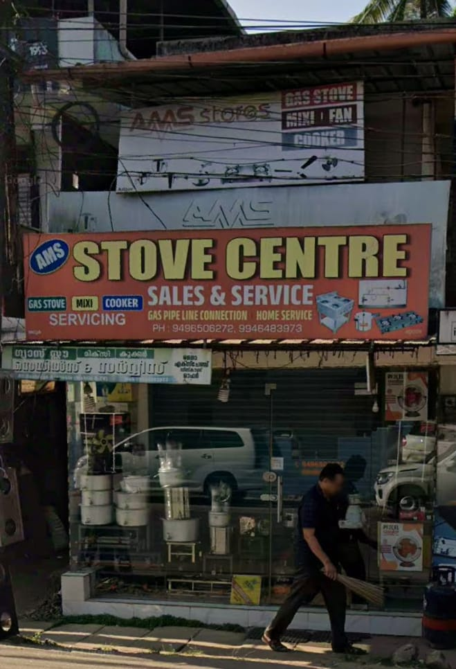
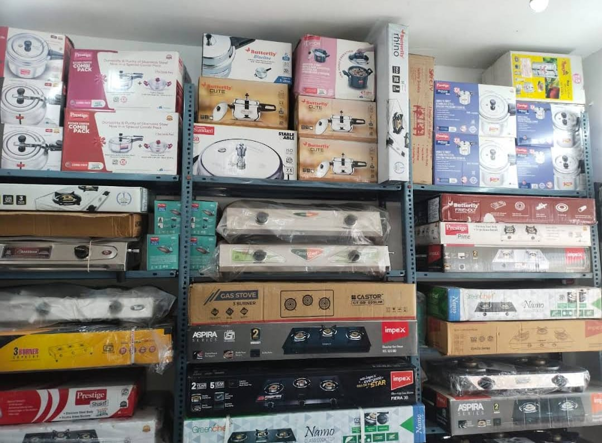
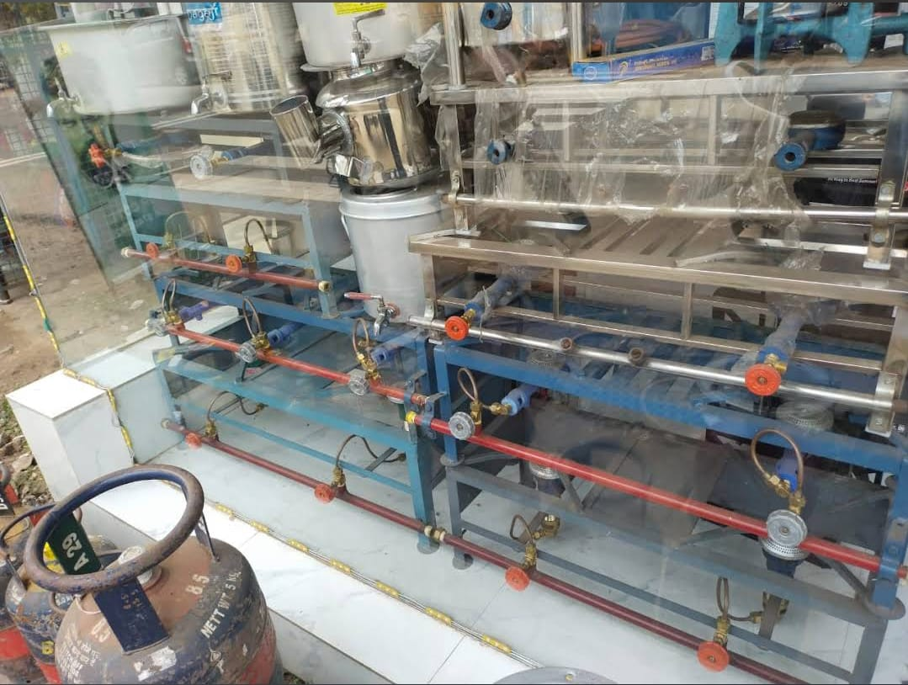
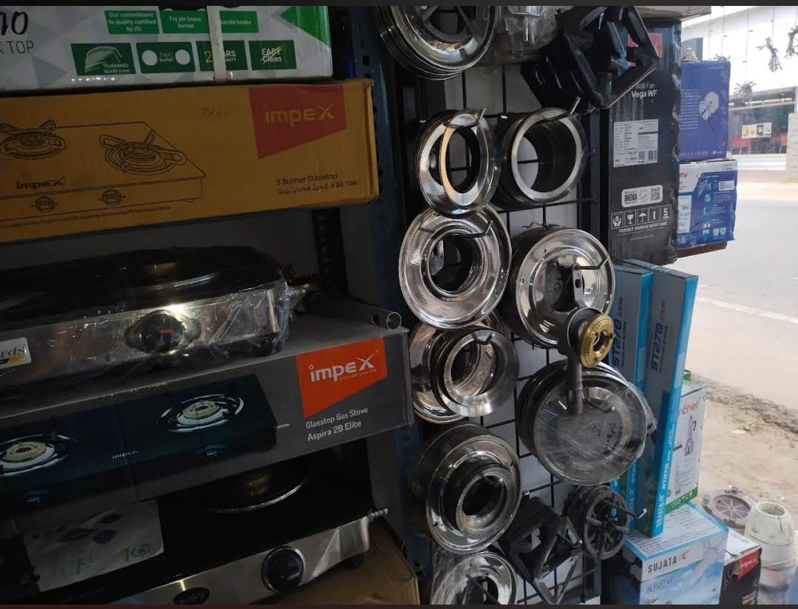

Our Work & Products





Gas Stoves | Burners | Repairs | Spare Parts | Home Service Available
AMS Stove Centre is a trusted provider of gas stove repair in Adoor, offering home service, burner repair, and spare parts.
Need urgent stove repair? Book your service instantly on WhatsApp.
📲 Book on WhatsappAMS Stove Centre is one of the most trusted names for gas stove repair in Adoor, Pathanamthitta. We specialize in burner repair, gas leakage fixing, stove servicing, and spare parts replacement. Our expert technicians provide fast home service across Adoor and nearby areas.
If you're searching for “stove repair near me” or “gas stove service in Adoor”, we are ready to help.
Quality stoves at affordable prices.
Expert technicians for all stove issues.
All types of stove spare parts available.
We come to your home for quick service.
Years of trusted service in Adoor.
Best service at reasonable rates.




Looking for stove repair near you? See why customers trust AMS Stove Centre in Adoor.
⭐⭐⭐⭐⭐Very fast service and affordable price!
⭐⭐⭐⭐⭐Best stove repair in Adoor. Highly recommended.
⭐ Rated highly by customers on Google Maps for stove repair in Adoor.
Phone:📞 9496506272
Location:📍Kannamkode,Adoor,Pathanamthitta dt.-691523,Kerala